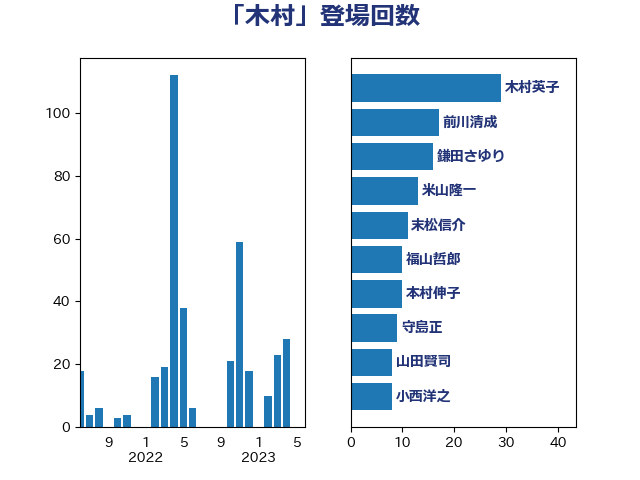

単語「木村」

| 木村英子 | れいわ新選組 | 29 回 |
| 前川清成 | 日本維新の会 | 17 回 |
| 鎌田さゆり | 立憲民主党 | 16 回 |
| 米山隆一 | 立憲民主党 | 13 回 |
| 末松信介 | 自由民主党 | 11 回 |
| 福山哲郎 | 立憲民主党 | 10 回 |
| 本村伸子 | 日本共産党 | 10 回 |
| 守島正 | 日本維新の会 | 9 回 |
| 山田賢司 | 自由民主党 | 8 回 |
| 小西洋之 | 立憲民主党 | 8 回 |
| 細田博之 | 自由民主党 | 7 回 |
| 山田宏 | 自由民主党 | 7 回 |
| 天畠大輔 | れいわ新選組 | 7 回 |
| 石橋通宏 | 立憲民主党 | 6 回 |
| 木原稔 | 自由民主党 | 6 回 |
| 伊藤俊輔 | 立憲民主党 | 6 回 |
| 森屋宏 | 自由民主党 | 5 回 |
| 斉藤鉄夫 | 公明党 | 5 回 |
| 大口善徳 | 公明党 | 5 回 |
| 階猛 | 立憲民主党 | 4 回 |
| 鈴木馨祐 | 自由民主党 | 4 回 |
| 足立康史 | 日本維新の会 | 4 回 |
| 葉梨康弘 | 自由民主党 | 4 回 |
| 田島麻衣子 | 立憲民主党 | 4 回 |
| 木村次郎 | 自由民主党 | 4 回 |
| 斎藤嘉隆 | 立憲民主党 | 4 回 |
| 黄川田仁志 | 自由民主党 | 3 回 |
| 高橋克法 | 自由民主党 | 3 回 |
| 阿達雅志 | 自由民主党 | 3 回 |
| 谷川とむ | 自由民主党 | 3 回 |
| 藤岡隆雄 | 立憲民主党 | 3 回 |
| 蓮舫 | 立憲民主党 | 3 回 |
| 舩後靖彦 | れいわ新選組 | 3 回 |
| 田畑裕明 | 自由民主党 | 3 回 |
| 浅田均 | 日本維新の会 | 3 回 |
| 橋本岳 | 自由民主党 | 3 回 |
| 森まさこ | 自由民主党 | 3 回 |
| 根本匠 | 自由民主党 | 3 回 |
| 徳永久志 | 立憲民主党 | 3 回 |
| 岸田文雄 | 自由民主党 | 3 回 |
| 小泉進次郎 | 自由民主党 | 3 回 |
| 小倉將信 | 自由民主党 | 3 回 |
| 寺田静 | 無所属 | 3 回 |
| 奥野総一郎 | 立憲民主党 | 3 回 |
| 古川禎久 | 自由民主党 | 3 回 |
| 井野俊郎 | 自由民主党 | 3 回 |
| 高橋千鶴子 | 日本共産党 | 2 回 |
| 長妻昭 | 立憲民主党 | 2 回 |
| 鈴木義弘 | 国民民主党 | 2 回 |
| 鈴木敦 | 国民民主党 | 2 回 |
| 田村貴昭 | 日本共産党 | 2 回 |
| 田村まみ | 国民民主党 | 2 回 |
| 池田佳隆 | 自由民主党 | 2 回 |
| 永岡桂子 | 自由民主党 | 2 回 |
| 日下正喜 | 公明党 | 2 回 |
| 川合孝典 | 国民民主党 | 2 回 |
| 岡田克也 | 立憲民主党 | 2 回 |
| 山添拓 | 日本共産党 | 2 回 |
| 山東昭子 | 自由民主党 | 2 回 |
| 山口俊一 | 自由民主党 | 2 回 |
| 尾崎正直 | 自由民主党 | 2 回 |
| 小野田紀美 | 自由民主党 | 2 回 |
| 小林鷹之 | 自由民主党 | 2 回 |
| 塚田一郎 | 自由民主党 | 2 回 |
| 古賀友一郎 | 自由民主党 | 2 回 |
| 伊藤忠彦 | 自由民主党 | 2 回 |
| 中根一幸 | 自由民主党 | 2 回 |
| 下条みつ | 立憲民主党 | 2 回 |
| 鬼木誠 | 立憲民主党 | 1 回 |
| 高木真理 | 立憲民主党 | 1 回 |
| 長友慎治 | 国民民主党 | 1 回 |
| 近藤和也 | 立憲民主党 | 1 回 |
| 赤羽一嘉 | 公明党 | 1 回 |
| 谷田川元 | 立憲民主党 | 1 回 |
| 西村智奈美 | 立憲民主党 | 1 回 |
| 緒方林太郎 | 無所属 | 1 回 |
| 稲田朋美 | 自由民主党 | 1 回 |
| 福岡資麿 | 自由民主党 | 1 回 |
| 田村憲久 | 自由民主党 | 1 回 |
| 清水真人 | 自由民主党 | 1 回 |
| 海江田万里 | 立憲民主党 | 1 回 |
| 浜田靖一 | 自由民主党 | 1 回 |
| 江藤拓 | 自由民主党 | 1 回 |
| 東徹 | 日本維新の会 | 1 回 |
| 木原誠二 | 自由民主党 | 1 回 |
| 早稲田ゆき | 立憲民主党 | 1 回 |
| 山田勝彦 | 立憲民主党 | 1 回 |
| 山崎正恭 | 公明党 | 1 回 |
| 小里泰弘 | 自由民主党 | 1 回 |
| 小沢雅仁 | 立憲民主党 | 1 回 |
| 太栄志 | 立憲民主党 | 1 回 |
| 嘉田由紀子 | 無所属 | 1 回 |
| 吉田宣弘 | 公明党 | 1 回 |
| 吉田久美子 | 公明党 | 1 回 |
| 吉田はるみ | 立憲民主党 | 1 回 |
| 吉川沙織 | 立憲民主党 | 1 回 |
| 加藤勝信 | 自由民主党 | 1 回 |
| 三ッ林裕巳 | 自由民主党 | 1 回 |